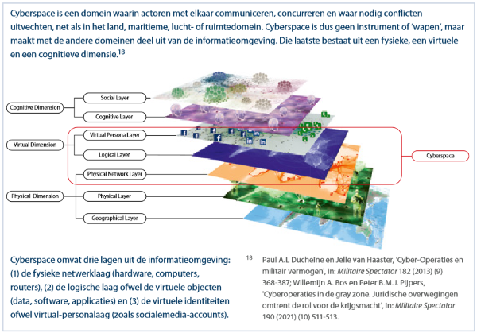

1.Wat is de logischelaag?
De logische laag is een onderdeel van het 3-lagen model in ICT-systemen. Dit model verdeelt een systeem in drie lagen: de toepassingenlaag, de logische laag, en de fysieke laag.
De logische laag is de software die de werking van de hardware ondersteunt. Voorbeelden van dingen die in de logische laag zitten:2. Mijn logischelaag (IOS) :
het is een besturingssysteem voor een mobiel ontwikkeld door Apple voor hun iPhone, iPad en iPod Touch apparaten. Het zorgt ervoor dat je deze apparaten kunt gebruiken door de hardware en software te beheren. Eerst werd het uitgebracht in 2007 als Iphone OS samen met de eerste Iphone. In 2010 werd de naam veranderd naar iOS om aan te geven dat het besturingssysteem niet alleen voor de iPhone bedoeld was. IOS is nu niet alleen voor iphone, maar ook voor de Ipad en AppleTV.
Lees meer over IOS op deze pagina.
